|
|
Building an AI-powered routing chatbot
Part 4 of 4 |
|
|
|
Building an AI-powered routing chatbot
Part 4 of 4 |
|
Our bot already does a lot of things: asks the customer id and identifies the language, sentiment and intent of the customer question. There's only one last step left: choosing the best human agent to handle the interaction (step 7). For that we'll not use any machine learning service. This time we'll build a machine learning model ourselves.
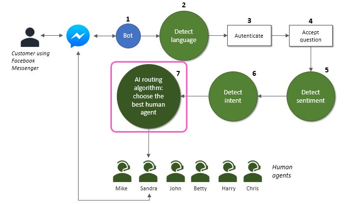
After guessing the language (English or Spanish), the sentiment (positive, neutral or negative) and the intent (sales or support) of the customer question, it's time select the best agent to handle the interaction. This will be done in 2 phases: candidate generation and ranking. But first things first: we need some agents to start with.
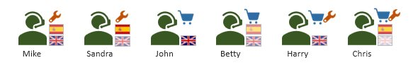
Six agents, with different profiles, are defined in file Agents.py.
self.agents = [
{"agent id": 0, "name": "Mike", "en": 0.75, "es": 0.75, "support": 1.00, "sales": 0.00},
{"agent id": 1, "name": "Sandra", "en": 0.50, "es": 1.00, "support": 1.00, "sales": 0.00},
{"agent id": 2, "name": "John", "en": 1.00, "es": 0.00, "support": 0.00, "sales": 1.00},
{"agent id": 3, "name": "Betty", "en": 0.50, "es": 0.50, "support": 0.00, "sales": 1.00},
{"agent id": 4, "name": "Harry", "en": 0.75, "es": 0.00, "support": 1.00, "sales": 1.00},
{"agent id": 5, "name": "Chris", "en": 0.20, "es": 0.75, "support": 1.00, "sales": 1.00}]
Each agent profile will be defined by an identifier, a name and a set of skills:
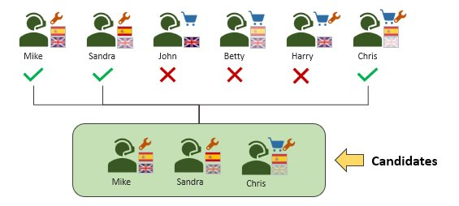
At this point we'll narrow down the list of candidates to the ones that have at least the minimum skills to handle the interaction. Following the example in the picture, if the detected language was Spanish and the detected intent was Support, the only agents we'll consider for ranking will be Mike, Sandra and Chris, the only ones that talk Spanish and know how to handle support issues. All others will be eliminated at this phase.
The generate_candidates method does all this. By summing the needed skills multiplied by the respective weights (agent skill levels), it finds out if an agent is skilled enough to handle an interaction with a given language and intent. This is calculated for all the agents, eliminating the ones that have no adequate skills at all. In the end it returns an ordered list of the best candidates (limited to a number defined by the max_number_of_candidates variable).
def generate_candidates(self, language, intent, verbose=False):
""" Returns a list with a number of candidates (yet to be ranked).
Candidates are selected according to their skills for handling
the language and intent of the interaction.
"""
candidates = []
en_weight = 0.0
es_weight = 0.0
sales_weight = 0.0
support_weight = 0.0
if language=="en":
en_weight = 1.0 # English skill needed
elif language=="es":
es_weight = 1.0 # Spanish skill needed
if intent=="sales":
sales_weight = 1.0 # Sales skill needed
elif intent=="support":
support_weight = 1.0 # Support skill needed
for agent in self.agents.agents:
skill_for_the_job = \
en_weight * agent["en"] + \
es_weight * agent["es"] + \
sales_weight * agent["sales"] + \
support_weight * agent["support"]
# In a real case we may want to filter here the unavailable agents
# (not logged, not ready to work or already busy)
# or the ones that do not verify some minimum skills
# In this example we filter only those who have absolutely
# no skills for the job.
if skill_for_the_job > 0.:
candidates.append((agent["agent id"], skill_for_the_job))
# Sort by 'skill_for_the_job' column
candidates = sorted(candidates, key=lambda entry: entry[1], reverse=True)
# We want the first N only
candidates = candidates[:self.max_number_of_candidates]
if verbose:
if len(candidates) == 0:
print("No candidates found")
else:
print("Candidates found:")
for candidate in candidates:
print("{0} (skill for the job = {1})".format(self.agents.get_agent_name(candidate[0]), candidate[1]))
# Return the agent ids
return [row[0] for row in candidates]
There's no need for a complex candidate generation algorithm because it's very unlikely to have millions of agents, although the criteria is very simplified here. In a real system you would probably want to filter the unavailable (busy, not logged...) agents, and you would probably want to consider a different minimum for each skill (only agents with more than 20% of Spanish skill would be allowed to answer Spanish questions, for example).
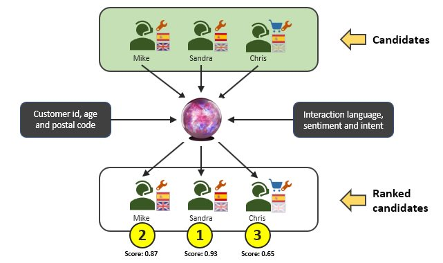
We could just stop here and select the top candidate found by generate_candidates. But that would take into account the agents skills only. At this point all we know is who's the best agents to handle an interaction in a given culture, for a given department. But that agent may not be the best one to chat with this specific customer, considering the customer profile, the sentiment and all the past interactions. For example, some agents can have more empathy than others and deal better with an angry customer, and some agents can be better at selling products to younger customers, even if they are less skilled in their language.
An algorithm like that is very hard to define by a human, because many times it's hard to calculate the likelihood of an agent being successful handling a specific interaction: there are just too many variables involved. That's why we'll need a more complex machine learning model (the crystal ball in the picture) to rank the candidates and see in fact who is the best one according to all the information we can use, including customer information and interactions history. For that task we'll use an artificial neural network (ANN).
We'll use Keras, a high-level deep learning library that enables quick creation of neural networks, with Tensorflow as backend. Tensorflow was developed by Google and is an open source machine learning framework for high performance numerical computation.
So first you'll have to install Tensorflow and Keras in your machine. You can check for instructions here and here.
All the code related to the neural network can be found in file RankingNetwork.py. Explaining how a neural network works is out of the scope of this post. Let's just keep in mind that a ANN is a machine learning model that excels at approximating functions and make predictions - an excellent crystal ball! And in our case we'll want a function than receives contact, agent and interaction data, and predicts a score: a number between 0 and 1 measuring the success of the interaction.
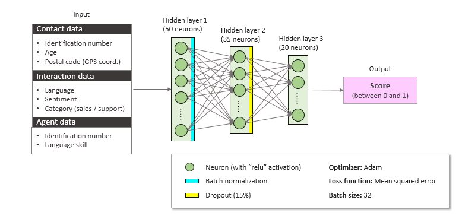
The picture shows how the inside of our crystal ball looks like. It receives data associated to the customer, the interaction and the agent. The input connects to a 50-neuron hidden layer, which connects to a 35-neuron hidden layer, which in turn connects to a 20-neuron hidden layer. At the end we have the score as output.
The hyperparameters (number of neurons and layers, optimizer, activation functions, batch size, etc.) were set by trial-and-error. You should test different configurations to see what works best for your training set.
In the code, the ANN is defined by a few lines executed when the AIRouter object creates the RankingNetwork object.
def create_network(self):
""" Creates the neural network.
"""
model = Sequential()
model.add(Dense(50, input_shape=(self.input_size,), activation="relu"))
model.add(BatchNormalization())
model.add(Dense(35, activation="relu"))
model.add(Dropout(0.15))
model.add(Dense(20, activation="relu"))
model.add(Dense(1))
model.compile(optimizer='adam', loss='mse', metrics=['mae', 'acc'])
return model
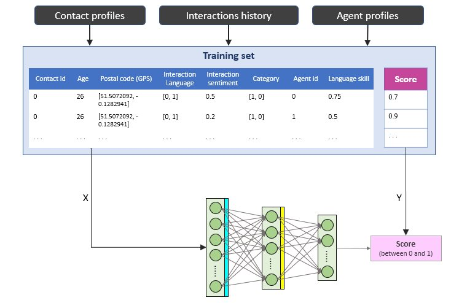
Unfortunately, our crystal ball is not really magic: it must be trained with labeled data to adjust itself in order to be able to predict scores as accurately as possible. For that we'll need a training set. We'll use a set of past interactions, and we'll feed the network not only with the input but also with the correct output for training. The "correct output" is also called label, and in this case it would be the real score given for each interaction, being the score a number that measures the success of the interaction from 0 to 1 (in a real case it can be the result of a quality survey or some other indicator with business meaning).
The CRM class, in file CRM.py, provides a small hardcoded history of interactions that will be used to build our training set.
self.history = [
{"contact id": 0, "handled by": 0, "language": "en", "sentiment": 0.50, "category": "support", "score": 0.70 },
{"contact id": 0, "handled by": 1, "language": "en", "sentiment": 0.20, "category": "support", "score": 0.90 },
{"contact id": 1, "handled by": 5, "language": "en", "sentiment": 0.10, "category": "support", "score": 0.30 },
{"contact id": 2, "handled by": 3, "language": "es", "sentiment": 0.50, "category": "sales", "score": 0.85 },
{"contact id": 2, "handled by": 5, "language": "es", "sentiment": 0.30, "category": "support", "score": 0.70 },
{"contact id": 2, "handled by": 1, "language": "es", "sentiment": 0.90, "category": "sales", "score": 0.00 },
{"contact id": 1, "handled by": 4, "language": "en", "sentiment": 0.20, "category": "support", "score": 0.00 },
{"contact id": 1, "handled by": 5, "language": "en", "sentiment": 0.00, "category": "support", "score": 0.85 },
{"contact id": 0, "handled by": 1, "language": "en", "sentiment": 0.50, "category": "support", "score": 0.75 },
{"contact id": 0, "handled by": 2, "language": "en", "sentiment": 1.00, "category": "sales", "score": 0.20 },
{"contact id": 0, "handled by": 3, "language": "en", "sentiment": 0.80, "category": "sales", "score": 0.00 },
{"contact id": 1, "handled by": 2, "language": "en", "sentiment": 0.50, "category": "sales", "score": 0.80 },
{"contact id": 1, "handled by": 3, "language": "en", "sentiment": 0.60, "category": "sales", "score": 0.00 },
{"contact id": 2, "handled by": 5, "language": "es", "sentiment": 0.90, "category": "sales", "score": 1.00 },
{"contact id": 1, "handled by": 4, "language": "en", "sentiment": 0.10, "category": "support", "score": 0.90 },
{"contact id": 2, "handled by": 5, "language": "es", "sentiment": 1.00, "category": "sales", "score": 1.00 },
{"contact id": 0, "handled by": 0, "language": "en", "sentiment": 0.40, "category": "support", "score": 0.60 },
{"contact id": 1, "handled by": 4, "language": "en", "sentiment": 0.20, "category": "support", "score": 1.00 },
{"contact id": 2, "handled by": 3, "language": "es", "sentiment": 0.90, "category": "sales", "score": 1.00 }]
To train, the application must be launched in training mode, with the command line parameter "-train". You should do this at least once before starting the bot in normal mode.
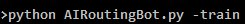
Instead of connecting to Facebook and start waiting for messages, the bot will execute 500 epochs of training by calling the train function.
def train(self, epochs):
""" Trains the network with the crm data.
"""
# Let's first assemble the training set to feed the network
x = [] # Input data
y = [] # Labels
print("Creating the training dataset...")
for interaction in self.crm.history:
sample = self.build_input_sample(
interaction["contact id"],
interaction["language"],
interaction["sentiment"],
interaction["category"],
interaction["handled by"])
x.append(sample)
y.append(interaction["score"])
x = np.array(x)
y = np.array(y)
print("Training for {} epochs".format(epochs))
# Train for n epochs
results = self.model.fit(x=x, y=y, epochs=epochs, batch_size=32)
print("Model is trained")
# Saves weights (network state after training)
# to be loaded on future executions
self.model.save_weights("weights.h5")
The train function starts by building the training set, converting each history entry into a training sample using the build_input_sample method, which gathers information from history, contact profile and agent profile, and combines everything in a list of numbers, or a vector. The list of all these vectors forms the training set.
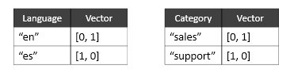
As a side note, the postal code will be converted to the approximate GPS coordinates of that region, in the form [latitude, longitude], and this is achieved by using the Google Maps Geocoding API. You must subscribe this Google service and use your own key in get_GPS_coordinates function, file Geocoding.py.
After that the train function calls model.fit passing the training set (our inputs (x) and labels (y)), and Keras does the hard work of training the ANN.
The network learns by adjusting its internal variables, or weights, during training. That knowledge must be kept somewhere and restored whenever the bot is launched.
When the train function finishes, it saves the weights in a file named "weights.h5".
The weights are loaded and restored every time a RankingNetwork object is created.
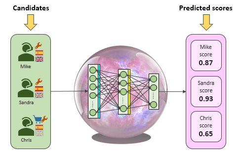
With the network trained, our bot can now use it to predict scores. Predictions are performed by the predict method.
def predict(self, contact_id, language, sentiment, category, candidates):
""" Makes a prediction of success for all the candidates.
"""
with self.graph.as_default():
# Let's first assemble the input data
x = [] # Input data
print("Creating the input vectors...")
for candidate in candidates:
sample = self.build_input_sample(
contact_id,
language,
sentiment,
category,
candidate)
x.append(sample)
x = np.array(x)
print("Predicting...")
results = self.model.predict(x)
print("Done")
return results
It first builds a list of samples, one for each candidate, in a similar way to the dataset created during training mode, except this one has no labels (we don't know the right scores: we want to predict them). Then it uses Keras model.predict to get the list of predicted scores, one for each candidate, and returns it.
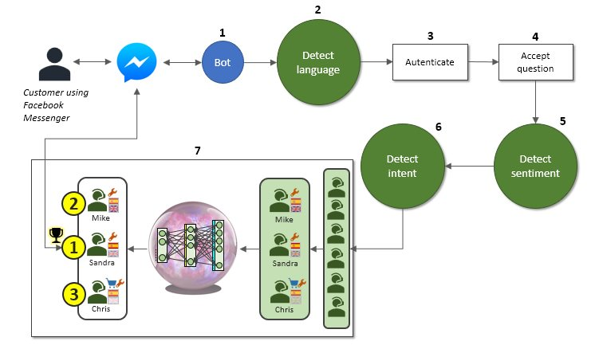
At last we have all we need to choose the best agent. The routing functionality is implemented in file AIRouter.py, method route_to_best_agent.
def route_to_best_agent(self, contact_id, question):
""" Routes the interaction to the best available agent.
Because this is just a sample we'll not route anything,
we'll just return a reply saying which agent was selected
or a default message if no agent could be chosen.
"""
# Get the contact from the CRM
contact = self.crm.get_contact_by_id(contact_id)
# Take a guess at the language
language = self.text_analytics.guess_language(question, verbose=True)
# Take a guess at the sentiment
sentiment = self.text_analytics.guess_sentiment(question, language, verbose=False)
# Take a guess at the intent
intent = self.text_analytics.guess_intent(question, language, verbose=True)
print("Received question from {0}: '{1}'".format(contact["name"], question))
print("Language={0}, Sentiment={1}, Intent={2}".format(language, sentiment, intent))
if intent == "other":
# Intent was not discovered... return a default message in the proper language
if language == "es":
return "Perdona {}, pero no te entiendo...".format(contact["name"])
else:
return "Sorry {}, I couldn't understand your message...".format(contact["name"])
else:
# Generate n candidates to rank
candidates = self.generate_candidates(language, intent, verbose=True)
if len(candidates) == 0:
# No candidates case
if language=="es":
return "Todos los agentes humanos están ocupados en este momento. Por favor espera, tu pregunta será respondida lo más rápido posible."
else:
return "All human agents are busy at this moment. Please wait, your question will be answered as soon as possible."
else:
print("Candidates found: predicting success")
# Predict the success for each candidate
ranked_candidates = self.rank_candidates(contact_id, language, sentiment, intent, candidates)
print("The best agents to handle the interaction are:")
for ranked_candidate in ranked_candidates:
print("{0} (predicted success = {1})".format(self.agents.get_agent_name(ranked_candidate[0]), ranked_candidate[1]))
# Choose the best one
best_agent = ranked_candidates[0]
ret = ""
if language=="es":
if intent=="sales":
department = "ventas"
else:
department = "soporte"
ret = "Transfiriendo a {0}, del departamento de {1}. ¡Encantado de hablar contigo!".format(self.agents.get_agent_name(best_agent[0]), department)
else:
return "Directing to {0}, from {1} department. Nice talking to you!".format(self.agents.get_agent_name(best_agent[0]), intent)
return ret
In a nutshell:
Detects the language, the sentiment and the intent of the customer question
Generates candidates
Ranks the generated candidates
Chooses the one with the highest score
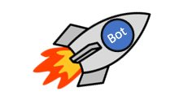
Let's recapitulate what must be done to run the example.
1. Clone or download the bot code from GitHub.
2. Install ngrok, Python and all the needed dependencies (flask, keras, tensorflow, h5py, numpy, requests and any other required packages).
3. Open a Command Prompt and launch ngrok (> ngrok http 5001)
4. Go to Facebook for Developers, create and setup a Messaging app. Subscribe the app to a Facebook page and get the Access Token. Paste the Access Token into AIRoutingBot.py.
5. Subscribe Microsoft Text Analytics services and paste your key and the endpoint base URL into TextAnalytics.py.
6. Subscribe Microsoft Language Understanding (LUIS) and paste your key into TextAnalytics.py. Create apps for English and Spanish cultures. Train and publish them. Paste the endpoint URLs into TextAnalytics.py.
7. Subscribe Google Maps Geocoding API and paste your key into Geocoding.py.
8. Open another Command Prompt. Launch the bot in training mode (> python AIRoutingBot.py -train) and verify that file "weights.h5" is created in the end of training. You can skip this step and use the "weights.h5" that goes with the project, but if you make any modification in customer profiles, agent profiles or interaction history, this step is mandatory.
9. Launch the bot in normal mode (> python AIRoutingBot.py)
10. Go to your app in Facebook for Developers. Set the callback URL as the URL created by ngrok, and use "AIRoutingBotToken" as your Verify Token (if you change it make sure it matches the VERIFY_TOKEN in your code).
11. Talk with the bot to see if it's capable of productive dialogues like these.
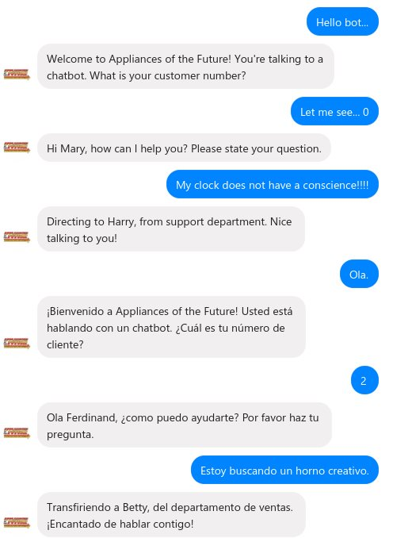
The "Appliances of the Future" example presented in this series of posts is a basic case of customer service - 2 departments only (support and sales), 6 agents, 3 customers, a few interactions in history... in the real world the problem would not need fancy machine learning algorithms to be solved.
But let's imagine 20 departments, 600 agents, 300000 customers and an history with 1 million interactions to learn from. In such scenario, a bot capable of understanding the intent of a customer, directing the conversation to the right agent in the right department without making many questions, would provide a valuable customer service.
Perceiving subtle, relevant patterns in a complex scenario is not an easy task, and that's when deep learning comes in. Neural networks are being used successfully for recommender systems, matching millions of users with millions of products, I've tried to apply similar ideas to a very simple, messaging-based example of customer service, showing along the way how some machine learning cloud services can be used and how easy is to put a chatbot online these days.
And it was fun . I hope you enjoyed as much as I did.
See you in the Future!

Previous: identifying the intent of the customer using Microsoft LUIS